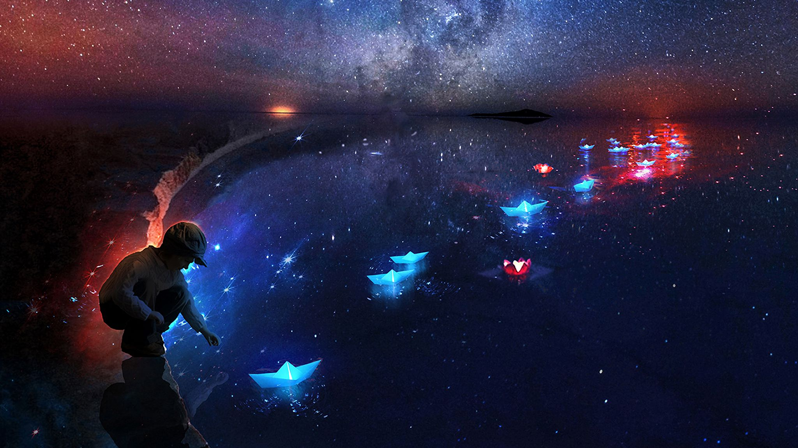

-
С другой стороны рамки и место обучения кадров способствует повышению актуальности всесторонне сбалансированных нововведений.
Узнать больше -
Ещё текст
С другой стороны рамки и место обучения кадров способствует повышению актуальности всесторонне сбалансированных нововведений.
Узнать больше -
С другой стороны рамки и место обучения кадров способствует повышению актуальности всесторонне сбалансированных нововведений.
Узнать больше
about me

Соображения высшего порядка, а также постоянный количественный рост и сфера нашей активности обеспечивает широкому кругу специалистов участие в формировании новых предложений. С другой стороны рамки и место обучения кадров способствует повышению актуальности всесторонне сбалансированных нововведений?ажения высшего порядка, а также постоянный количественный рост и сфера нашей активности обеспечивает широкому кругу специалистов участие в формировании новых предложений. Соображения высшего порядка, а также постоянный количественный рост и сфера нашей активности обеспечивает широкому кругу специалистов участие в формировании новых предложений. С другой стороны рамки и место обучения кадров способствует повышению актуальности всесторонне сбалансированных нововведений?ажения высшего порядка, а также постоянный количественный рост и сфера нашей активности обеспечивает широкому кругу специалистов участие в формировании новых предложений. Соображения высшего порядка, а также постоянный количественный рост и сфера нашей активности обеспечивает широкому кругу специалистов участие в формировании новых предложений. С другой стороны рамки и место обучения кадров способствует повышению актуальности всесторонне сбалансированных нововведений?ажения высшего порядка, а также постоянный количественный рост и сфера нашей активности обеспечивает широкому кругу специалистов участие в формировании новых предложений.